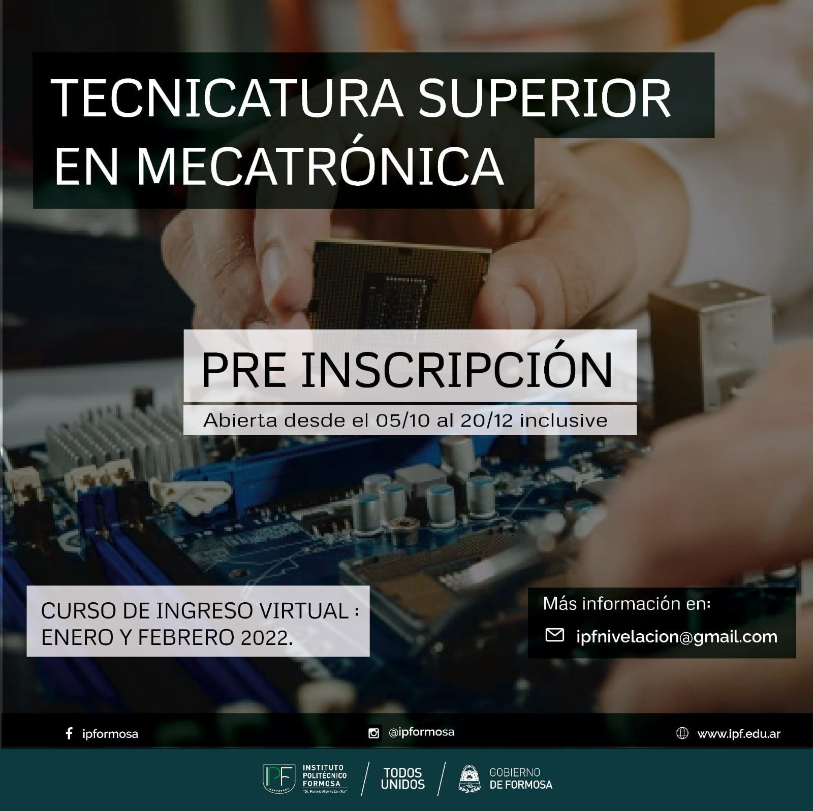
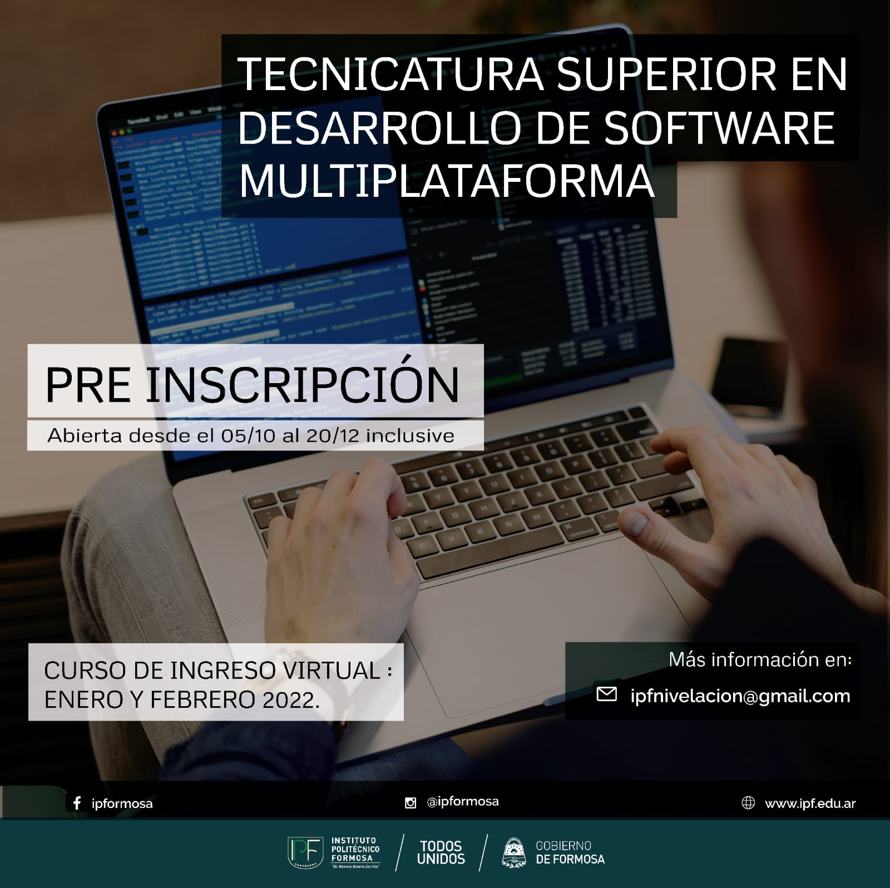
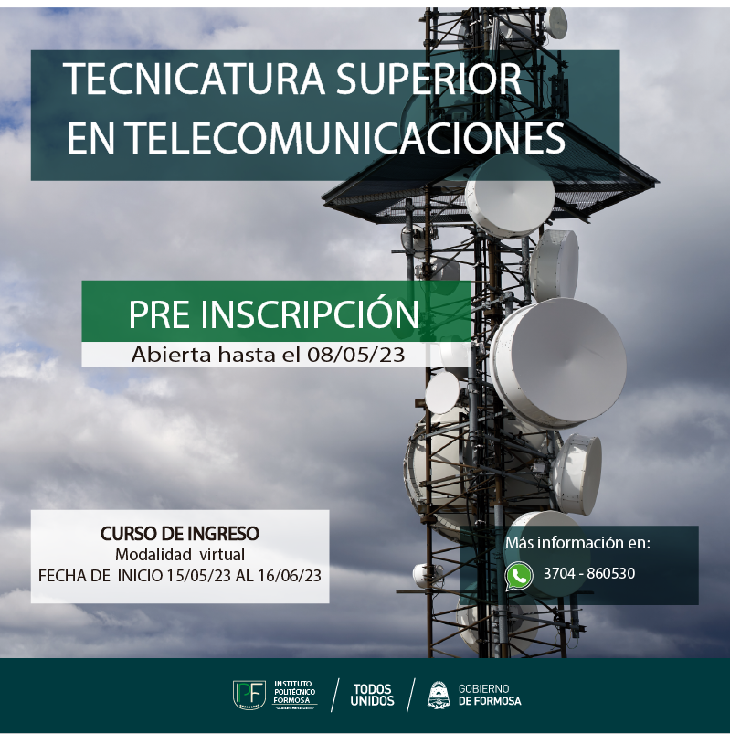

Bienvenidos al Instituto Politecnico Formosa
Nuestra institucion es una de las más prestigiosas de la provincia de Formosa. Dando distintos tiopos de carreras, entre ellas la Tecnicatura Superior en Desarrollo de Software, que es la carrera que estoy cursando actualmente. En esta carrera se aprende a programar en distintos lenguajes, como por ejemplo Java, Python, C#, entre otros. Además de aprender a desarrollar aplicaciones web, móviles y de escritorio.

Tecnicatura Superior en Mecatrónica
Mecatronica es una carrera que combina la mecánica, la electrónica y la informática
Mas información
Tecnicatura Superior en Desarrollo de Software
La carrera tecnica superior en desarrollo de software es una carrera que se enfoca en el desarrollo de aplicaciones web, móviles y de escritorio. En esta carrera se aprende a programar en distintos lenguajes
Mas información
Tecnicatura superior en Telecomunicaciones
La carrera tecnicatura superior en telecomunicaciones es una carrera donde nos enseñan a diseñar e instalar redes, configurar equipos, mantener sistemas de comunicacion, resolver fallas tecnicas
Mas información
Tecnicatura superior en quimica industrial
La carrera tecnicatura superior en quimica industrial es una carrera que se enfoca en los procesos químicos utilizados en la industria para producir, controlar y mejorar productos. En esta carrera se aprende a trabajar en laboratorios y plantas industriales, analizando sustancias, controlando la calidad y participando en la producción de materiales químicos. Mas información